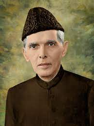

it is MAZAR-E-QUAID is the final resting place of Muhammad Ali Jinnah, the founder of pakistan.in the grave complex, three graves are in succession while one is at northern side. the northren grave is of Fatima jinnah which is beautifully decorated with black floral design at its base. for the other graves, the one at the nothern side is of Liaqat Ali Khan. this tomb was built in honour of Muhammad Ali Jinnah ,an indian-muslim politician and the leader of the"all india muslim league"who went on to found pakistan andd served as its first governer generel.
today we are as an independent nation due to the efforts of our great leader.may! his soul rest in peace.Ameen.
